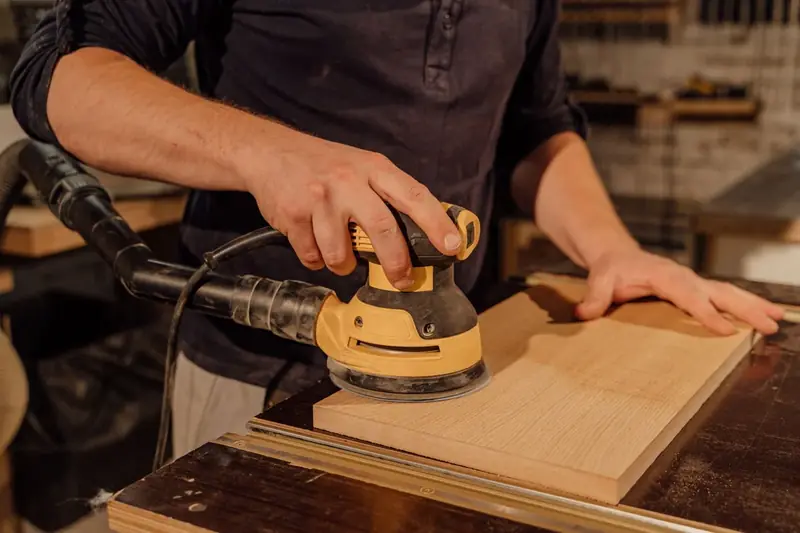
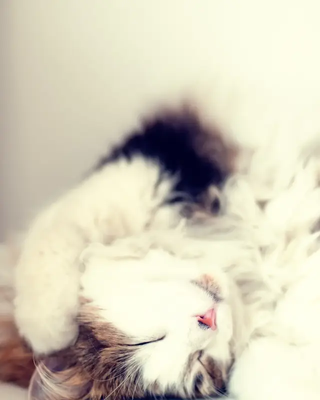

What leaves the workshop
Built for climbing, sized to combine
Every piece is cut from the same sheets and drilled on the same jig, which is why a shelf from this month lines up with a bridge bought next year.
Hoop pine wall step shelves
The basic rung of every climbing route: a 40 cm by 25 cm slab of 18 mm hoop pine ply with rounded corners and a sanded, oiled top. Two steel brackets are fitted before it leaves the bench, so you only have to find the wall. A$59, full details
Rope and plank wall bridges
Nine pine planks threaded on two runs of sisal rope between a pair of plywood end ledges. It spans 90 cm, sways a little underfoot, and joins two shelves that would otherwise be a long way apart. A$129, full details
Window perches with washable covers
A deeper platform that fixes to the wall just under the sill, topped with a foam pad in a canvas cover. Two covers come in the box. It is the lookout at the end of a route, or a piece on its own. A$89, full details
Floor-to-wall sisal scratching posts
An 80 cm post wrapped tight in 6 mm sisal, standing on a plywood foot and tied back to the wall with a bracket at the top so it does not rock. It makes a natural first step onto the lowest shelf. A$75, full details
Replacement sisal and covers
Sisal is meant to be shredded. When a post looks ragged, a 25 m coil re-wraps it in about half an hour with the staples supplied. The spare perch cover that ships with every perch does the same job for the soft parts. A$22, full details
The cat wall planner
See the route before you drill
Type in your wall and the planner draws it to scale, sets the shelves out on the workshop's spacing rule and prices the pieces. Try it here on a wall 300 cm wide under a 240 cm ceiling:
Pick a route to see the pieces it needs.
How an order works
From the rack to your wall in five rises
Neko Perch is a small workshop, not a warehouse. Sheets of hoop pine plywood come in from Queensland plantations, get cut into shelves, ledges and perch platforms, and have their corners rounded and edges sanded until a paw or a sleeve slides over them without catching. Tops are finished with a hardwax oil that leaves the grain showing. The sisal posts are wrapped by hand, one tight turn at a time, and stapled where the rope starts and ends.
Because the range is only five pieces, they are made in batches and kept on the rack. That is what lets an order leave within three working days instead of waiting for a saw to be free.

Sanding a board smooth at the bench.
- You send the order form. Pick the pieces, the quantities and your delivery region. The form shows a running total as you go.
- The workshop writes back. Inside a working day an e-mail lands with every piece listed, the delivery cost and the total, plus a secure link for paying. Until you tap that link, no money moves.
- The parcel is packed. Pieces are wrapped in paper, boxed with their brackets, screws and wall plugs, and handed to the courier within three working days of payment.
- You get a tracking number. It arrives by e-mail the day the parcel leaves Brisbane.
- You put it up. A drill, a spirit level and the printed sheet in the box are all it takes. We do not visit to install, so the sheet is written for a first-timer.
What we care about is plain: timber you can see, sizes that add up, edges that are kind to hands and paws, and instructions that assume nothing. What we turn down is just as plain, and it is listed a little further along this wall.
Order cat furnitureMore about the workshop

Not on this wall
- No pet sitting or grooming. We make furniture. Looking after the cat stays with you.
- No installation visits. Pieces arrive ready to hang, with a printed sheet. We do not come out to fit them.
- No custom sizes. Five pieces, fixed dimensions, always on the rack.
- No shipping overseas. Parcels go to Australian addresses only.
Straight answers
Questions people ask before they drill
Each step shelf hangs on two steel brackets that are already screwed to its underside. You mark two points with a spirit level, drive the screws and you are done. The box holds timber screws for stud walls and wall plugs for brick or block, so pick the pair that matches what is behind the paint. On plasterboard, find the stud first: the brackets sit 24 cm apart, and the planning page shows how to line a route up on studs.
That depends on your lease more than on us. Every piece is fixed with screws, so each one leaves two to four small holes. Plenty of renters get written permission first and fill the holes with ordinary filler when they move out. If drilling is off the table, the pieces on this site are not the right buy, and we would rather say so now than after the parcel lands.
Yes. The window perch cover is plain cotton canvas with an envelope back, so it slips off the foam pad without a zip. Cold machine wash, line dry, back on the next morning. Every perch leaves here with two covers so one can be on the pad while the other is on the line.
Stock pieces are packed within three working days of payment. From there a parcel usually spends two to four working days on the road to the east-coast capitals and five to eight to Western Australia, the Northern Territory and regional addresses. The delivery page lists the cost for each region.
You can. The window is 30 days from the day it lands on your doorstep, and the piece must be unmounted and back in its box. E-mail us, post it, and once the workshop has it in hand the money returns to your original payment method inside five working days. The full wording is on the returns and refunds page.
No. The workshop cuts five pieces in fixed sizes and keeps them on the rack ready to pack, which is how the prices stay where they are. The sizes were chosen to combine: a 40 cm shelf, a 10 cm gap and a 90 cm bridge add up neatly on most walls, and the planner does that sum for you.
Top of the climb
A wall that gets used, from A$59 a step
Start with one shelf under the window or plan the whole route. Either way the order form adds it up in front of you, and nothing is charged until you have seen the total in writing.
Reaching the workshop
- Mailboxhello@brokerneko.com
- HoursMonday to Friday, 9 am to 4 pm Brisbane time
- Where we areBrisbane, Queensland. Orders are sent to every Australian state and territory; there is no shopfront to visit.
- OrderingThrough the order form, answered within one working day.